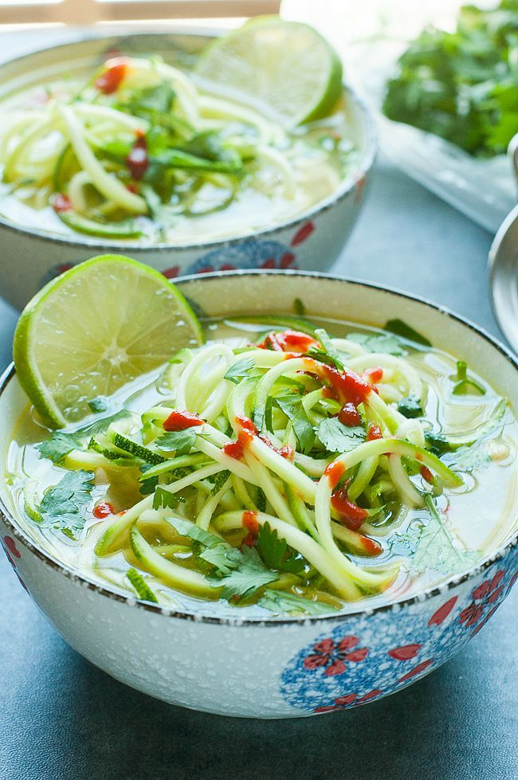

Spicy Sriracha Lime Chicken Zoodle Soup

One pot and 15 minutes are all you need to make this delicious dish!
As an added bonus, each serving of this delicious soup comes in under 300
calories a serving!!
Home
Ingredients for Spicy Sriracha Lime Chicken Zoodle Soup
- 8-10 oz. chicken breast (approx. 1 large)
- 4 Cups broth (chicken or vegetable)
- 1/4 tsp garlic powder
- 1/8 tsp cumin
- 1 large zucchini squash
- 1/2 TBSP fresh lime juice
- 1-2 fresh chopped cilantro
- 1-2 tsp Sriracha plus extra to taste
- 2 slices/wedges of lime
Instructions
-
Cut your chicken into slices ad add to a pot over medium-high heat.
-
Add broth, garlic powder [or fresh garlic] and cumin and bring to a
boil.
-
Once boiling, reduce heat and simmer until chicken is cooked thoroughly,
about 10 minutes.
-
While the chicken cooks, use a spiralizer to transform your zucchini
into tasty noodles.
-
Once the chicken is ready, add zucchini noodles and lime juice to the
soup and simmer for an additional 3 minutes until desired tenderness is
reached. For softer noodles , feel free to cook them longer.
-
Transfer soup to two large bowls and top each with fresh cilantro and
healthy serving of sriracha. Add a little or a lot! Serve with lime
wedges for a burst of flavor!
- Enjoy while its nice and hot!
Notes
-
I like to make my soup super spicy so I add thai peppers to the broth
while its cooking.
- For extra seasoning add green onion to the broth.
- Looking for another vegetable to add try oyster mushrooms